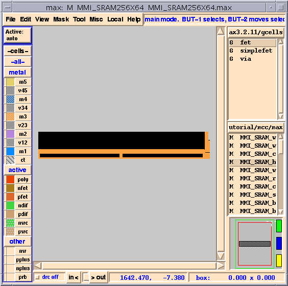
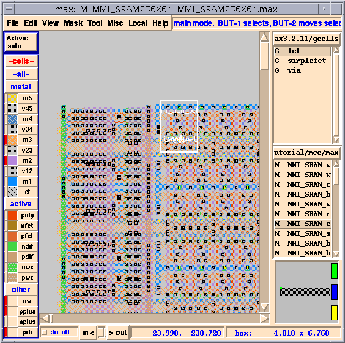
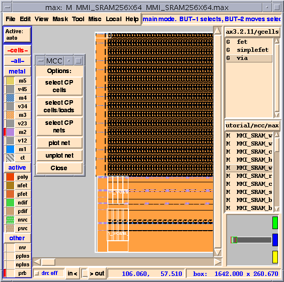
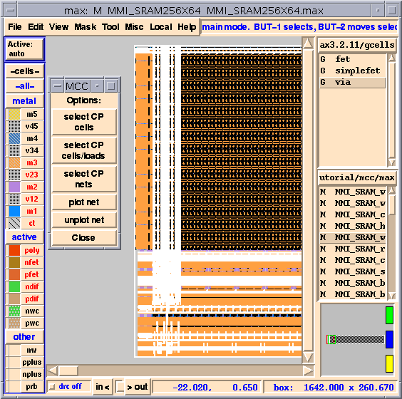
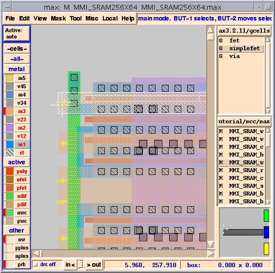
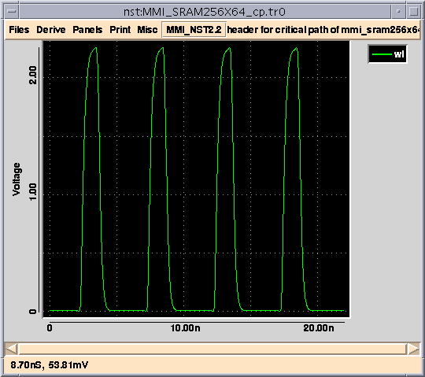
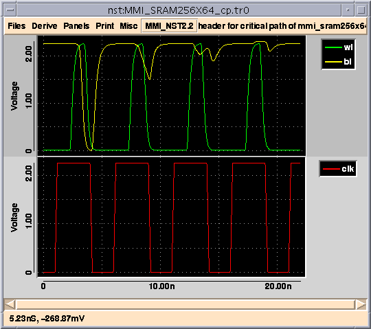

MCC MegaCell Compiler Tutorial |
Part 3
MC Critical Path Analysis
Overview
- You should now be able to write the tiling, via programming and port propagation commands in the MCC control program. You now know how to run
MC Build, and how to useMC Maketo help you with the tiling commands.
- Now, let's look at how MCC can help you with critical path analysis of your memory. MCC creates a critical path netlist of your megacell through any cell(s) that you select. This netlist is generated by tracing the cone of logic backwards to the input ports and forwards to the output ports from the selected cell(s). Thus, if you select the memory cell that is furthest away from the decoders and ask MCC to generate a critical path with the
MC Critical Pathcommand, you should get the critical path (longest) for the SRAM.
MC Critical Path
- The
MC Critical Pathcommand is not the same as a static timing analyzer, which searches all legal paths to find the longest path. TheMCCPcommand simply creates the netlist through the selected path. In most memory structures, the critical path is easy to identify, so this netlist will be the critical path. You can also select the memory cell that is the closest to the decoders and get a different type of critical path, one that is most susceptible to race conditions.
- MCC tries to create as accurate a critical path netlist as possible while minimizing simulation time. All wire resistances and capacitances on the critical path are included. All gates that load the critical path are tied off appropriately. For large megacells of 1 million or more transistors, the critical paths typically contain only a few thousand devices.
- In the following examples, we have already run a SPICE simulation on the critical path of a 256X64 SRAM. So, we need to build an SRAM of that size.
- This will actually create a 256X64 SRAM. Look back at Figure 14, which shows the floorplan of our SRAM. Notice that there is a 4:1 mux followed by 2:1 muxes, which creates an 8:1 mux. So, the
ROWSvariable is multiplied by 8 to get the number of addresses (256). The variableCOLSis divided by 8 to get the number of outputs (width of stored data), which in this case is 64.
- Click on
Done. You should now see and SRAM as shown in Figure 22.Figure 22: "MMI_SRAM256X64"

- Notice that for Figure 22 the visibility of the
otherlayers has been turned off. These changes make it easier to see what we're working on. You will probably need to turn some layers back on, since all butm1,v12andm2were turned off when looking at via programming.
- We're now going to extract the SPICE netlist for the critical path in this design.
- Zoom in on the upper left corner of the SRAM as shown in Figure 23.
- Select the upper left
mmi_sram_cellas shown in Figure 23.Figure 23: Memory Cell Furthest From Decoders Selected

- If you select
menuinstead ofnetlist, MCC brings up theMC Critical Pathpopup form. This is useful if you have already created a critical path netlist, simulated it and now want to look at the net further.
- When
MC Critical Pathis done, theMC Critical Pathpopup form appears as shown in Figure 24.
Figure 24: MC Critical Path Of Memory Cell

- MCC has highlighted all of the cells that are part of the critical path. You can have MCC also highlight all loads as well as the cells included in the critical path by clicking on
select CP cells/loads.
- Let's look at the nets that are part of the critical path.
- The cell should now look something like Figure 25.
Figure 25: Critical Path Nets Of Memory Cell

- After generating the critical path SPICE netlist, you simulate the path in SPICE. In addition to creating the SPICE netlist,
MC Critical Pathalso creates a template for your header file. You need to edit the header file and specify the path to your SPICE models. You also need to provide some sort of stimulus for the SPICE run. We have already run HSPICE for you on this critical path.
- This is the header file which was created by
MC Critical Path. Stimuli have been added and the SPICE models have been included in the header file. The other file in the directory,MMI_SRAM256X64_cp.tr0,is the output of the SPICE run. We're going to load the results of our SPICE run into the NST (New SPICE Tool) Waveform Viewer, which is included with SUE.
Figure 26: Highlighted "wl" Net

- Go back to MAX and zoom in very close on the upper left corner of the SRAM, as shown in Figure 26.
- Turning off the selectability of
m2makes it less likely that you will select the power net.
- To select the
wlnet, type theshotkey on thewlnet. The netwlshould now be highlighted as in Figure 26.
- The waveform for
wlshould now be plotted in NST as shown in Figure 27.
Figure 27: Plot Of "wl" Net In NST

- You can select more nets on the critical path in MAX and plot them in NST. You might need to click on
select CP netsagain to know which nets are part of the critical path. You can also go to theFilesmenu in NST and select theMMI_SRAM256X64_cp.tr0file. A popup form opens and lists all the nets in the SPICE run. You can then click on the desired net names and plot them.
You can also add panels to NST by selectingAdd Panelfrom thePanelsmenu. Figure 28 shows a new panel added with additional nets plotted.Figure 28: More Nets Plotted

| ----- Micro Magic ----- |